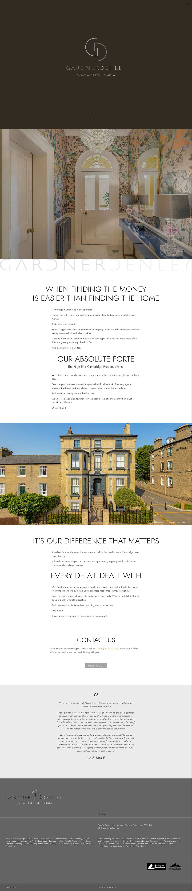
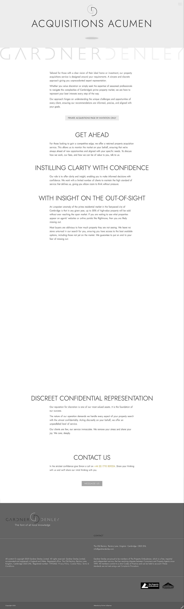

Cambridge's prime property buying agency. A bespoke WordPress build for a niche consultancy operating at the top end of the residential market — where every detail of the digital presence matters as much as the properties it represents.
The brief
Gardner Denley operates at the top end of the Cambridge residential market. Their clients expect clarity, discretion, and confidence from the first interaction.
The existing website did not reflect that level. It lacked structure, presence, and the sense of authority needed to match the properties and clients they deal with.
The brief was to create a site that feels aligned with that world. Something controlled, considered, and credible from the first glance.
The work
The project started from a clean slate.
A custom WordPress build using Elementor formed the foundation, with bespoke CSS used throughout to remove template constraints and shape a more precise layout and behaviour.
Every decision was deliberate:
- Typography chosen to carry weight without excess
- Spacing used to create pace and clarity
- Navigation simplified to reduce friction
- Colour palette kept tight to maintain consistency
The layout was built to guide, not decorate.
- Clear entry points into services
- Structured content hierarchy across pages
- Consistent visual rhythm to support scanning
- Mobile and tablet breakpoints refined to hold the same balance
Behind the scenes, the build focused on control and longevity:
- Flexible page structures for future content updates
- Clean, manageable backend for the client
- Performance-conscious setup to keep load times tight
- No reliance on unnecessary plugins or defaults
Nothing was added unless it had a clear purpose.
The outcome
The result is a site that feels aligned with the level Gardner Denley operates at.
It presents the business with clarity and control, positioning them as a serious, trusted advisor within a competitive market. The tone is measured, which allows the content and offering to carry the weight.
The site now works as a key entry point for new relationships. It supports first impressions, reinforces credibility, and gives potential clients confidence before any direct contact is made.
It also gives the team a platform they can actively use. Updating content, refining messaging, and adding new material can all be done without friction, which keeps the site current without ongoing redevelopment.
The structure allows the business to grow into it. Additional services, new areas of focus, or deeper content can be introduced without breaking the balance of the design.
Most importantly, it removes doubt. When someone lands on the site, the question is no longer whether Gardner Denley operates at the right level. That is clear within seconds.

